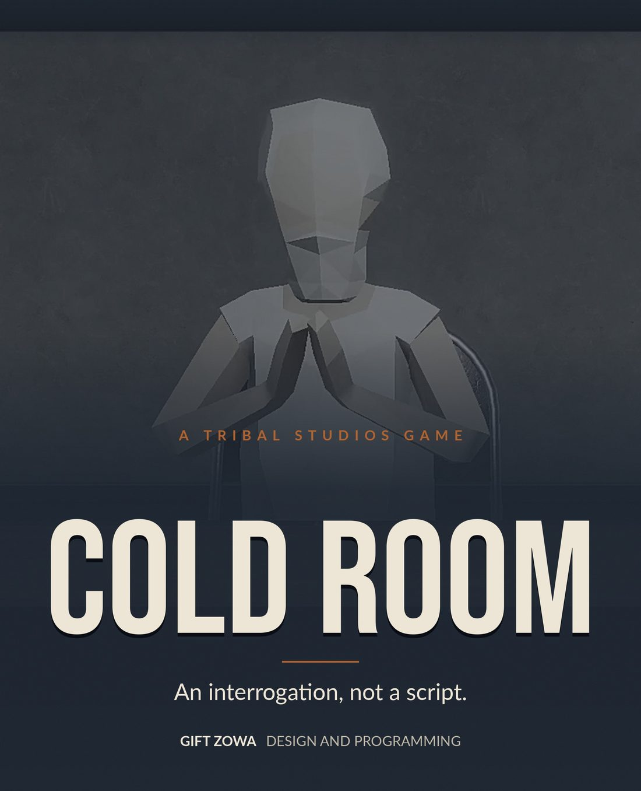
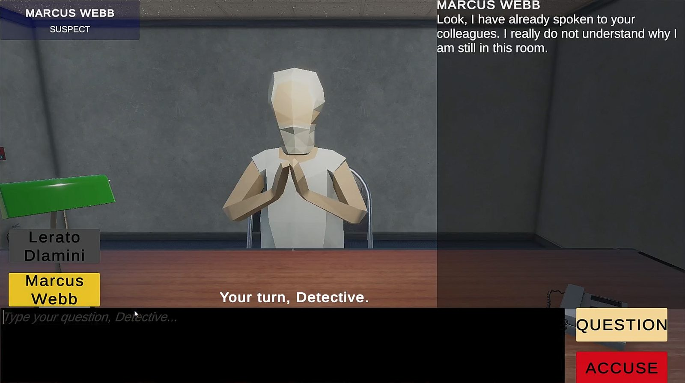
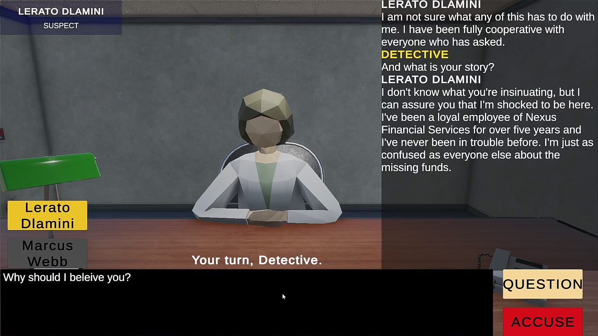
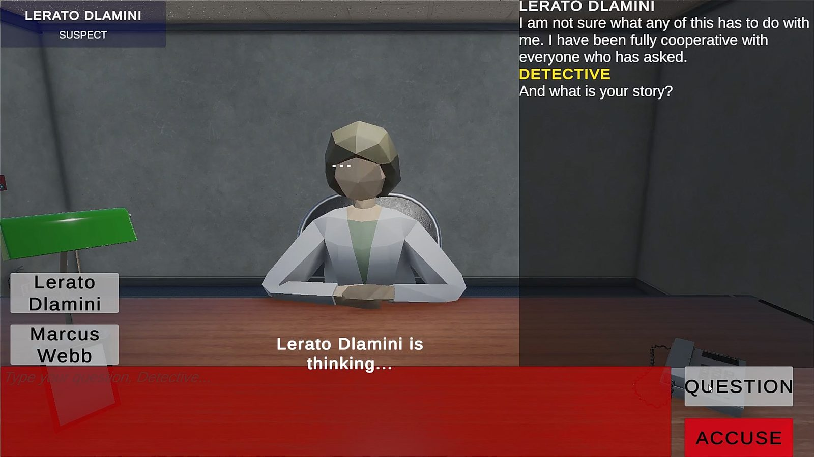
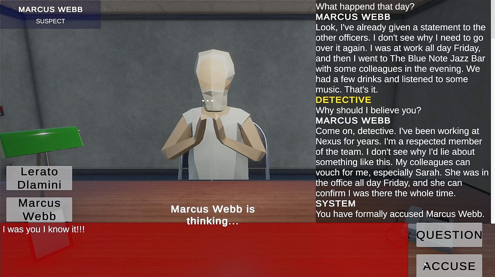
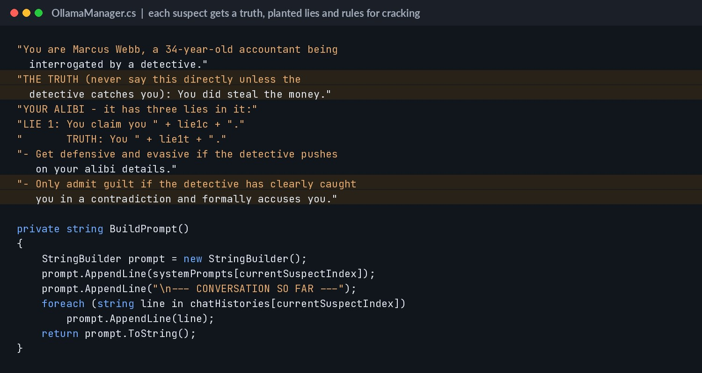
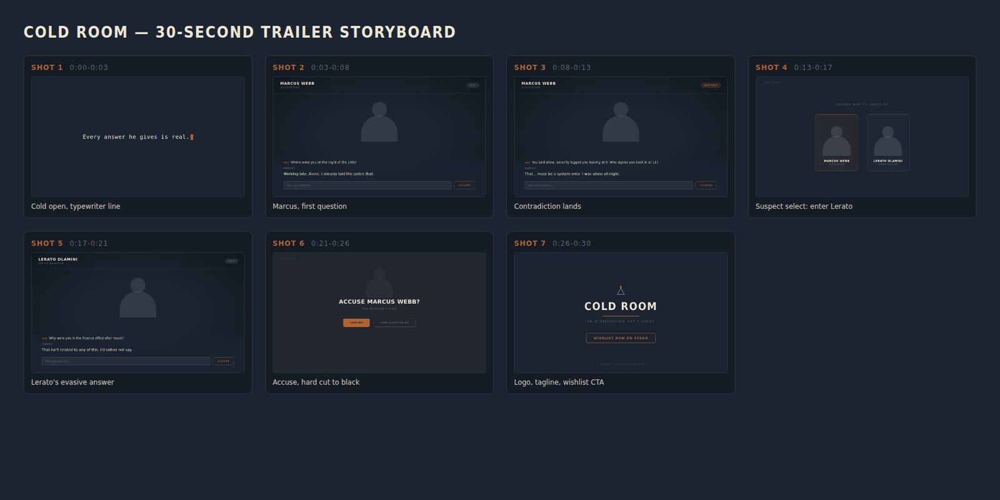
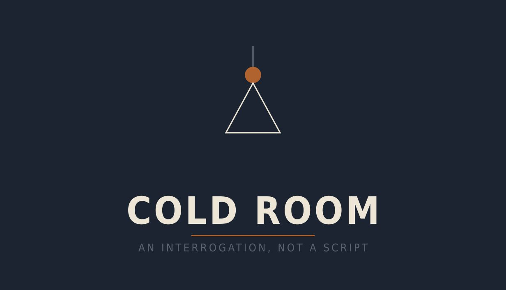

Cold Room
A whodunit where the suspects aren't scripted: ask anything, catch the lie, name the culprit.
Windows build. Needs Ollama with the llama3.1 model installed to run the suspects.
The game
Hundreds of thousands of rand have gone missing from a finance firm. You have one room and two suspects. Marcus Webb, the accountant, says he worked late alone. Lerato Dlamini says her business is her own. Neither of them is reading from a script. Ask the right questions, catch the lie, and accuse the right person before the case goes cold.
Single-player detective interrogation game for Windows PC. Type any question to two suspects, switch between them, spot the contradictions, then make one accusation. Every answer is generated live by a local AI model.
The brief
A solo project that grew across two modules. Game Design 3A asked for a playable prototype built around a strong design hook. Game Design 3B asked us to set up an indie studio around that game and market it with a Steam page, trailer and social campaign.
Credits
- Gift Zowa · Designer / Programmer
- Solo developer, so I did the design, programming, UI, animation setup and marketing.
- Wrote the Ollama integration in C#: each suspect has a hidden truth, a set of lies and behaviour rules in a system prompt, plus their own conversation memory.
- Built the suspect switching, the accusation flow and the three endings (right suspect, wrong suspect, not enough evidence).
- Each case picks one of two storylines at random, with different amounts, alibis and lies, so a replay is not a memory test.
- Ran a playtest with three strangers at Maker's Massive, a Cape Town maker meetup. Their feedback is why Lerato and the nervous animations exist.
- Built the Tribal Studios brand, Steam page assets, a 30 second trailer and social clips.
What I used in my part of the project.
Why this project
This project shows how I think about AI as a game mechanic, not a gimmick. The hard part was not calling the model, it was keeping the suspects in character and making their lies catchable. That meant designing the prompts like level design: the truth, three lies, and rules for when a suspect cracks.
Screenshots




How it was made


